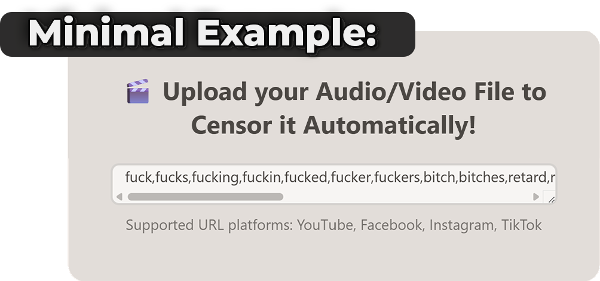
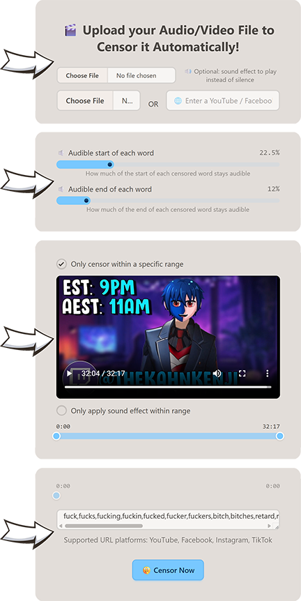

CensorUp - local, is a fork of the original project ‘CensorUp’.
Simply put- The purpose of this project is for creators/video makers to be able to censor profanity from their videos with the Click Of A Button!
The original had a few issues/downsides. One of those being the fact that it was INCREDIBLY complicated to setup, requiring a lot of dependencies and knowledge of what to do and how (Despite there being a guide).
With CensorUp-Local, the entire tool is now ENTIRELY bundled neatly into an executable file!
Not only that, but the original tool required some ‘storage thing?’ -well none of that! Now it’s ENTIRELY Local! (Hence the name)
---------------
But WAIT! There’s More...
(Scroll down for feature details)
Download Here! Just a one click setup and ready to use! - No Cloud or API keys needed :D
- LATEST RELEASEDirect from the GitHub releases page

Exact same purpose as the original - With many quality of life/control changes that really help!
Ok to start off, lets talk about the imports…
In the original you were only able to upload a video to censor the whole of.
Where-as in CensorUp-Local, you can choose a sound effect to play over the muted words as-well!
In the original I felt something was missing… I realised that feeling I felt, was the fact that the whole word was muted ENTIRELY, rather than only part of the word.
CensorUp-Local Fixes this issue entirely! Now there are two sliders, one to decide how much of the start of the word to keep, one to decide how much for the end of the word to keep!
There was other feature I wanted to add. This wasn’t a necessary feature, but hey I needed it once and I might need it again.
This feature I added is the ability to select an in/out range for where to apply censoring only within a range!
To addon to the ‘Censor Range’ feature, I also added a modifier button to change the ranged behaviour! When checked, the modifier makes it so anything outside the in/out range is still censored, however only within the range applied the sound effect! (If there is no sound effect this modifier is redundant)
Lastly just like in the original, there is a ‘Chosen Words’ list to only censor words of choice!
However now there are defaults located in the
<Install Directory>/defaults.json
